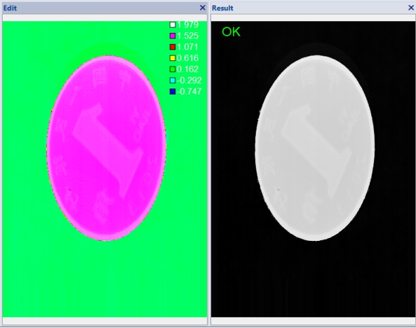
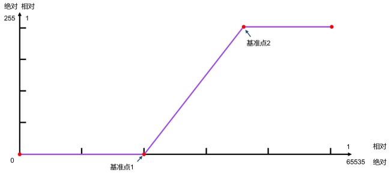
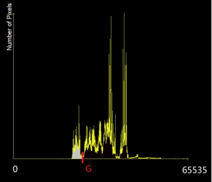
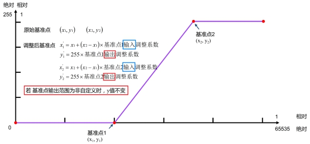
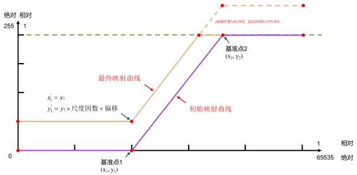

深度图像转灰度图像工具的功能是将16位深度图像通过像素映射的方法转换为8位灰度图像。

| 分类 | 参数名称 | 参数描述 |
|---|---|---|
| 属性窗口 | ROI类型 | 待检测区域，分为4种：整幅图像、仿射矩形、圆形、多边形。 |
| 像素映射方法 | 确定映射曲线基准点，分为5种，最小最大、高低尾部、均值标准差、线性映射，物理模式。 | |
| 标准差系数1/2 | 该参数仅在像素映射方法选择均值标准差时有效，即根据均值和标准差确定基准点。参数范围 (-1000, 0]/[0, +1000)。 | |
| 高/低尾部分数 | 该参数仅在像素映射方法选择高低尾部时有效，即根据低尾部分数、高尾部分数确定基准点。参数范围 [0,1]，且高低尾部分数之和小于等于1。 | |
| 基准点1输入调整系 | 按照该参数缩小基准点1的X轴数值。参数范围 [-1,0]。 | |
| 基准点2输入调整系数 | 按照该参数扩大基准点2的X轴数值。参数范围 [0,1]。 | |
| 基准点输出范围 | 分为3种，完整范围、倒置完整范围、自定义。 | |
| 基准点1输出调整系数 | 按照该参数调整基准点1的Y轴数值。参数范围 [0,1]。该参数仅在基准点输出范围选择自定义时有效。 | |
| 基准点2输出调整系数 | 按照该参数调整基准点2的Y轴数值。参数范围 [0,1]。该参数仅在基准点输出范围选择自定义时有效。 | |
| 尺度系数 | 调整最终映射输出的缩放因子。参数范围 (0, +1000)。 | |
| 映射输出偏移 | 调整最终映射输出的偏移量。参数范围 [0, +1000)。 | |
| Z向物理低值 | 该参数仅在像素映射方法选择物理模式时有效，指定映射输入的高度最低值 | |
| Z向物理高值 | 该参数仅在像素映射方法选择物理模式时有效，指定映射输入的高度最高值 | |
| 灰度边界值1 | 该参数仅在像素映射方法选择物理模式时有效，指定映射输出的灰度最低值 | |
| 灰度边界值2 | 该参数仅在像素映射方法选择物理模式时有效，指定映射输出的灰度最高值 | |
| 设置缺失像素值 | 选择“是”，则为缺失像素设置像素值 (0~255)；选择“否”，缺失像素则使用默认像素值0。 | |
| 启用直方图统计 | 选择“是”，则进行直方图统计计算均值、最小值、最大值、低尾部、高尾部和标准差。 | |
| 图像窗口 | 深度图像 | 显示待检测的深度图像，显示为伪彩色图像。 |
| 检测区域 | 在图像上显示待检测区域。 | |
| 数据链 | 输入深度图像 | 输入待检测的深度图像。 |
| 二维线性变换 | 目标相对于模板的平移、旋转、缩放变换。 | |
| 高级界面 | 无 | 无 |
| 分类 | 参数名称 | 参数描述 |
|---|---|---|
| 输出栏 | 输出灰度图像 | 输出图像的长宽和像素大小。 |
| 基准点1 | 基准点1的相对输入输出和绝对输入输出。 | |
| 基准点2 | 基准点2的相对输入输出和绝对输入输出。 | |
| 均值 | 图像中像素灰度级的平均值。 | |
| 最小值 | 图像中像素灰度级的最小值。 | |
| 最大值 | 图像中像素灰度级的最大值。 | |
| 低尾部 | 使得小于某数值（即低尾部）的数据量达到指定比例（即低尾部分数）。 | |
| 高尾部 | 使得大于某数值（即高尾部）的数据量达到指定比例（即高尾部分数）。 | |
| 标准差 | 图像中像素灰度级的标准差。 | |
| 执行结果 | 工具执行结果。 | |
| 执行时间 | 工具执行时间。 |
深度图像转灰度图像工具的原理是根据映射函数关系将16为图像转换成8位图像，映射函数如图2所示，其中X轴表示输入的16位图像的像素值，Y轴表示输出的8位图像的像素值，通过映射关系可以获取每一个16位图像像素值对应的8位图像像素值。

第一步：像素映射方法
最小最大：根据图像灰度级的最小值和最大值确定原始基准点。
x1 = 灰度最小值，y1 = 0。
x2 = 灰度最大值，y2 = 255。
高低尾部：根据高低尾部分数确定初始基准点。此方法可以排除一些灰度级较低或较高的干扰点。
假设低尾部分数为m，高尾部分数为n，则：原始基准点x1计算方式：当灰度级在0~G范围内的灰度个数（像素数）与图像总灰度个数（总像素数）的比值为m时，令x1=G，y1=0。

原始基准点x2计算方式：当灰度级在G~65535范围内的灰度个数（像素数）与图像总灰度个数（总像素数）的比值为n时，令x2=G，y2=255。
均值标准差：根据图像灰度级的均值和标准差确定原始基准点。此方法可以排除一些灰度级较低或较高的干扰点。
假设标准差系数1为a，标准差系数2为b，则：
x1 = a*dev+mean，y1 = 0。
x2 = b*dev+mean，y2 =2 55。
其中mean为图像灰度的均值，dev为标准差。
线性映射：根据一种线性变化得到原始基准点。
x1 = 0，y1 = 0。
x2 = 65535，y2 = 255。
物理模式：直接指定映射范围，无需第二步、第三步的配置步骤。
将高度值低于Z向物理低值的数据映射为灰度边界值1；
将高度值低于Z向物理高值的数据映射为灰度边界值2；
在Z向物理低值与高值范围内的数据线性映射到[灰度边界值1,灰度边界值2]。
x2 = Z向物理高值(mm)对应的深度值，y2 = 灰度边界值2。
第二步：基准点输入、输出调整系数

第三步：尺度因数、映射输出偏移
通过尺度因数和偏移对初始映射进行线性变换，得到最终映射。

无
参见“\Samples\3D\深度图\3D测量工具.gvp”。